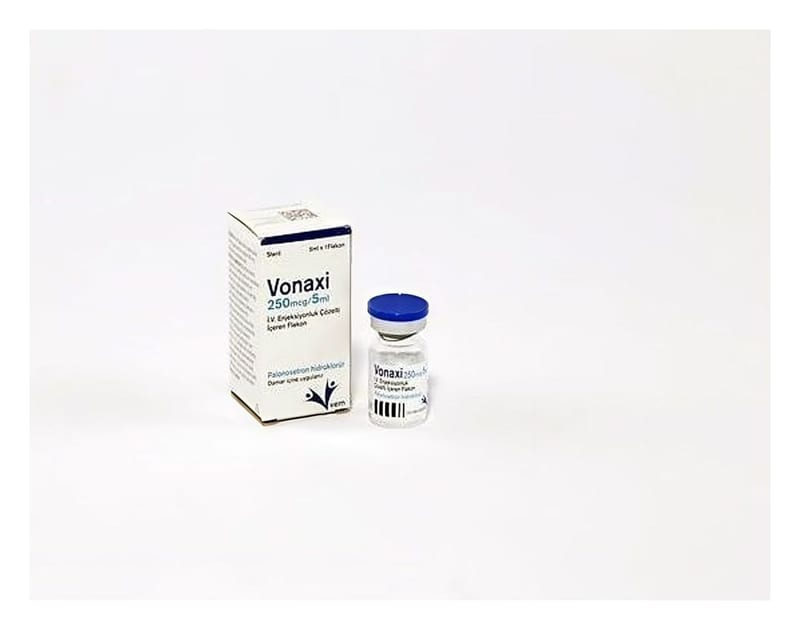

Vonaxi 250 mcg/5 ml IV. Enjeksiyonluk Çözelti İçeren Flakon, 1 Adet

Ne için kullanılır
KT · Bölüm 1 VONAXİ, damar içine uygulanan renksiz bir çözeltidir. VONAXİ, 5 ml çözelti içeren cam bir flakon içinde ambalajlanmıştır. Her bir flakon bir doz içerir. VONAXİ seratonin antagonistleri (5HT
) olarak bilinen bir ilaç grubuna dahildir. Bu ilacı kullanmaya başlamadan önce KULLANMA TALİMATINI dikkatlice okuyunuz, çünkü sizin için önemli bilgiler içermektedir. Bu kullanma talimatını saklayınız. Daha sonra tekrar okumaya ihtiyaç duyabilirsiniz. Eğer ilave sorularınız olursa, lütfen doktorunuza veya eczacınıza danışınız. Bu ilaç kişisel olarak sizin için reçete edilmiştir, başkalarına vermeyiniz. Bu ilacın kullanımı sırasında, doktora veya hastaneye gittiğinizde doktorunuza bu ilacı kullandığınızı söyleyiniz. Bu talimatta yazılanlara aynen uyunuz. İlaç hakkında size önerilen dozun dışında yüksek veya düşük doz kullanmayınız.
Bu grup ilaçlar bulantı ve kusmaya neden olabilen serotoninin etkisini durdurarak etki gösterir. VONAXİ, yetişkinlerde, adolesanlarda ve bir aylıktan büyük çocuklarda kanserin ilaçla tedavisi (kemoterapisi) ile bağlantılı bulantı ve kusmanın önlenmesinde kullanılır.